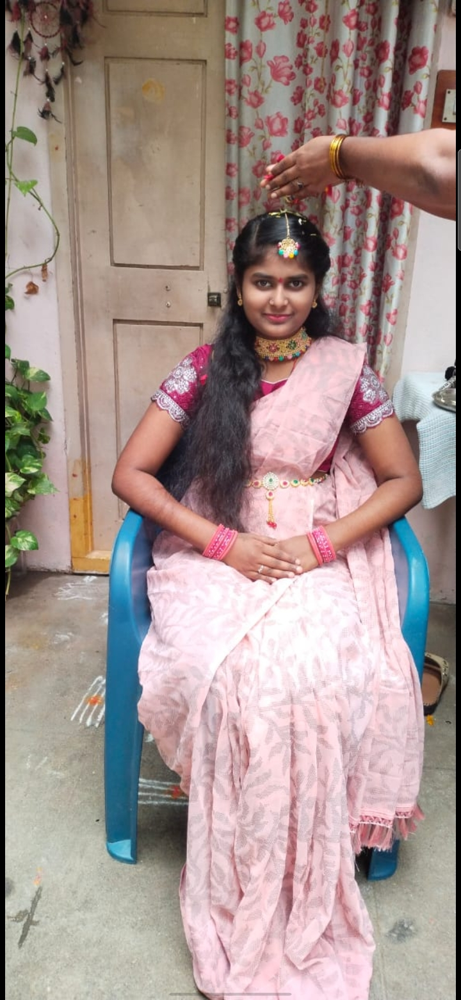

Self-love is not about being perfect or having
everything figured out. It’s about accepting
who I am in this moment — with my strengths,
my flaws, my progress, and even my mistakes.
It’s choosing to be patient with myself when
things don’t go as planned and understanding
that growth takes time. As a student and as
a person, I’m learning that comparison only
steals joy, and self-doubt only slows progress.
Self-love means trusting my journey, celebrating
small wins, forgiving myself for setbacks, and
continuing to move forward with confidence. It’s
about protecting my peace, setting healthy boundaries,
and reminding myself that I am enough — not because I
have achieved everything, but because I am trying, learning,
and growing every single day.
Usha Kiran
Engineering Students
As a student passionate about programming and emerging technologies, I’m on a journey to turn complex technical concepts into simple, practical understanding.I believe learning should build clarity, confidence, and real-world problem-solving skills — not confusion. Still learning. Still growing. 🚀
Moments of My Life

